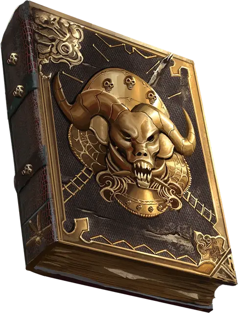

Книга мерзкой тьмы
Book of Vile Darkness
Чудесный предмет, артефакт (требуется настройка)

Содержимое этого отвратительного манускрипта — лакомый кусочек для тех, кто служит злу. Смертные не должны знать хранящиеся в нём тайны — они настолько ужасны, что один лишь взгляд на его страницы приводит к безумию.
Большинство считает, что авторство Книги мерзкой тьмы принадлежит богу-личу Векне. На её страницах он записал все свои больные идеи, все безумные мысли и все известные ему примеры чёрнейшего волшебства. Векна раскрыл все мерзкие темы, сделав из книги жуткий каталог всех смертных грехов.
Книга была в руках и других злодеев, и многие дополняли её своими мыслями. Эти дополнения видны сразу, ведь такие личности либо вклеивали свои страницы, либо делали пометки на полях и между строк. Также есть места, где страницы вырваны либо полностью залиты чернилами или кровью, так что оригинальный текст уже не разобрать.
Присутствие книги уничтожает природу. Обычные растения при ней вянут, животные отказываются к ней приближаться — книга постепенно уничтожает всё, к чему прикасается. Даже камень трескается и становится прахом, если книга долго на нём лежит.
Существо, настроенное на эту книгу, должно потратить 80 часов на чтение и изучение её содержимого, чтобы получить её преимущества. После этого существо может изменять содержимое книги, но при условии, что эти дополнения увеличивают зло или распространяют его.
Если на Книгу мерзкой тьмы настраивается незлое существо, оно совершает спасбросок Харизмы Сл 17. При провале его мировоззрение становится нейтрально-злым.
Книга мерзкой тьмы остаётся с вами, только пока вы сеете в мире зло. Если вы за 10 дней не совершили ни одного злого поступка или добровольно совершаете добрый поступок, книга исчезает. Если вы умираете, будучи настроенным на эту книгу, вашу душу забирает сущность великого зла. Пока ваша душа похищена, вы не можете вернуться к жизни никакими средствами.
Случайные свойства. Книга мерзкой тьмы обладает несколькими свойствами, определяемыми случайным образом:
- 3 малых положительных свойства
- 1 основное положительное свойство
- 3 малых отрицательных свойства
- 2 основных отрицательных свойства
Изменение характеристик. После того, как вы потратите нужное время на чтение и изучение книги, одна ваша характеристика по вашему выбору увеличивается на 2 с максимумом 24. Другая ваша характеристика по вашему выбору уменьшается на 2 с минимумом 3. После этого книга не может изменить ваши характеристики повторно.
Метка тьмы. После того, как вы потратите нужное время на чтение и изучение книги, вы получаете физическое уродство, отражающее вашу преданность мерзкой тьме. На вашем лице может появиться руна. Ваши глаза могут стать абсолютно чёрными, или же на лбу могут вырасти рога. Вы можете покрыться морщинами или язвами, можете потерять часть лица, получить раздвоенный язык или другую особенность, выбранную Мастером. Метка тьмы позволяет вам совершать с преимуществом проверки Харизмы (Убеждение) при взаимодействии со злыми существами, а также проверки Харизмы (Запугивание) при взаимодействии с незлыми существами.
Командование злом. Если вы настроены на книгу и держите её в руках, вы можете действием наложить на злую цель заклинание подчинение чудовища [dominate monster] (Сл спасброска 18). Вы не сможете использовать это свойство повторно до следующего рассвета.
Тёмные знания. Вы можете обращаться к Книге мерзкой тьмы, если совершаете проверку Интеллекта для вспоминания информации о чём-то злом, например, о демонах. Если вы это делаете, то ваш бонус мастерства для этой проверки удваивается.
Тёмная речь. Если вы несёте Книгу мерзкой тьмы и настроены на неё, вы можете действием прочесть вслух текст с её страниц на нечистом языке, известном как тёмная речь. Каждый раз, когда вы это делаете, вы получаете 1к12 урона психической энергией, а все незлые существа в пределах 15 футов от вас получают 3к6 урона психической энергией.
Уничтожение книги. Из Книги мерзкой тьмы можно вырывать страницы, но зло, содержащееся на них, в конечном счёте возвращается в неё. Обычно это происходит тогда, когда новый автор добавляет туда свои знания. Если солар [solar] порвёт книгу на две части, она будет уничтожена на 1к100 лет, после чего формируется заново в тёмной части мультивселенной.
Существо, настроенное на книгу в течение ста лет, может найти фразу, скрытую среди оригинального текста, которая, если её перевести на Небесный язык и произнести вслух, уничтожит в яркой вспышке света и книгу, и того, кто её произнесёт.
Однако, если в мультивселенной остаётся зло, книга формируется заново через 1к10×100 лет. Если всё зло в мультивселенной будет уничтожено, книга будет уничтожена навсегда.
Мерзкие знания
Книга мерзкой тьмы описывает всё зло, существующее во Вселенной. Персонаж может найти в ней такие ужасные тайны, что их не должен знать ни один смертный. Среди прочих тем встречаются следующие:
- Апофеоз греховности. Книга может содержать ритуал, позволяющий персонажу стать личем [lich] или рыцарем смерти [death knight].
- Истинные имена. В книге могут быть истинные имена многочисленных Исчадий.
- Тёмная магия. В книге могут быть ужасные и злобные заклинания, созданные или отобранные Мастером. В заклинаниях могут быть проклятия, которые калечат, насылают боль, распространяют болезни или требуют жертвоприношений.